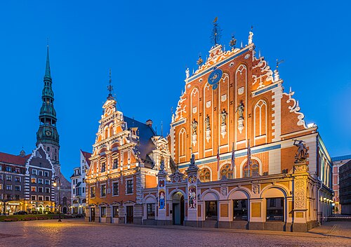
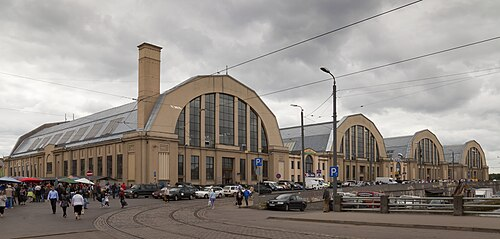
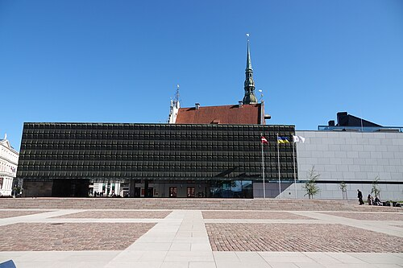

This map shows 19 of the most-searched sights in Riga as photo spots, ranked by how often people search for them: House of Blackheads, Central Market, Freedom Monument, Riga Cathedral and Swedish Gate lead the list. Every spot has a pin on the subject and a phone icon showing where to stand, with tips for shooting it on your phone: which lens to use, how to frame it, a settings tip and the best time of day. Directions and Navigate buttons take you to the standing point on foot or by public transport. 3 spots are free to view; the full map is for members.
The 3 free photo spots
1House of the Blackheads

The House of the Blackheads is one of the most eye-catching buildings in Riga's old town, with a gilded, richly decorated Dutch Renaissance façade that fills the frame from the square in front. It began in 1334 as a warehouse and meeting place for merchants, and from the mid-15th century it was used by the Brotherhood of Blackheads, a guild for unmarried merchants, shipowners and foreigners. The ornament you see today mostly dates from major works in the early 17th century. The building was wrecked in the fighting of June 1941, and the ruins were pulled down in 1948. It was rebuilt between 1996 and 2000, and more than 5,000 people paid to place a brick in the wall. It officially opened on 9 December 1999. The site is also linked with the first decorated Christmas tree, put up in 1510.
It photographs well because the façade is bright, detailed and sits right on an open square, so you can stand back and get the whole front in one shot. The best-known shot is a straight-on view from the middle of the square. For a wider postcard version, include the spire of St Peter's Church rising above the gable. Summer weekends are very crowded, and the Christmas market fills the square with stalls from late November to early January. Plan your shot around that, or accept a few people in the foreground.
Where it is: In the old town of Riga, facing the open square of Rātslaukums, which is the usual place to photograph it from.
Shooting it on your phone
Lens: Start with the default lens (1x) for the straight-on view of the façade. Switch to ultra-wide (0.5x) if you want more of the square or the spire of St Peter's Church in the same shot. If the square is busy, a 2x telephoto setting lets you pick out the gilded details above the crowds.
Where to stand: Stand in Rātslaukums (Middle of the square, about 10 m south of the façade). A frontal view of the gilded Dutch Renaissance façade filling the frame, with the square in the foreground. From here the gilded Dutch Renaissance façade fills the frame, with the square in the foreground.
Framing: Turn on gridlines and keep the phone upright and level so the sides of the building stay straight. Centre the gable on the middle line for a calm, symmetrical frontal shot. As an alternative from the same square, step back a little and use 0.5x or 1x to include the spire of St Peter's Church rising above the gable for the wider postcard view. Keep the phone level when you use ultra-wide, or the building will lean.
Settings tip: Tap the gilded part of the façade to focus, then slide the exposure down a touch so the gold keeps its detail and does not wash out. Turn Live Photos on if you like, but it is a still subject, so a sharp single frame is the aim.
Best time: Late afternoon, in the hour before sunset, when guides say the sun brings out the gilding. Summer weekends and the Christmas market period are the busiest.
2Riga Central Market

Riga Central Market is a huge food market housed in five long pavilions, and it is a good place for lively, colourful phone photos. The pavilions were built between 1924 and 1930 and reuse the metal frameworks of German Zeppelin hangars. Their hangar-derived roofs, with Neoclassical and Art Deco touches, give the buildings a shape you will not see at an ordinary market. Together with Old Riga, the market has been on the UNESCO World Heritage list since 1998. It covers about 72,300 square metres and has more than 3,000 trade stands. It is described as Europe's largest market and bazaar.
The subject is big, so decide what you want before you start. From outside, the long rows of pavilions make a strong, repeating pattern. Inside and around the stalls, the photos are about people, piles of produce and signs. Keep a few shots wide to show the scale of the roofs, then move in for close pictures of stalls and colourful displays. Ask before photographing a stallholder close up, as a courtesy. Keep a hand on your bag, because the market is busy and petty theft is a known problem. Check the official site before you go for opening times and any rules about photography.
Where it is: In Riga, on the bank of the Daugava, next to the railway and bus stations.
Shooting it on your phone
Lens: Start with the ultra-wide (0.5x) for the pavilion roofs and the long rows of buildings. Use the default lens (1x) for stalls and street scenes. Use the telephoto (2x-5x, depending on your phone) for details on stalls from a polite distance.
Where to stand: Stand on Akmens tilts. The Old Town and modern left-bank buildings appear together in one frame, with the market, the railway bridge and the National Library visible across the river. Take your wide shots as you approach, then go in among the stalls for close-ups.
Framing: Turn on the gridlines and line up the long pavilion roofs with a horizontal line so the buildings look straight. Stand at the end of a row of stalls so the lines lead the eye into the picture. Include a person walking past or a stallholder at work to show the scale. Then step in for a close shot of produce.
Settings tip: Tap on the brightest part of the stall and slide the exposure down a little so colours stay rich and bright areas do not wash out. Where the light is dim under a roof, use night mode and hold the phone steady against a pillar or your body. Portrait mode suits a single stall or a piece of produce.
Best time: Go in the morning, when the stalls are likely to be busiest and fully stocked. Check the official site before you go for opening times.
7Museum of the Occupation of Latvia

The Museum of the Occupation of Latvia is a black, boxy modernist building that stands out from the pale stone and spires of the Old Town nearby. The best-known view is across Latviešu strēlnieku laukums, with the tall granite Riflemen Monument in the foreground, the museum's dark block behind it, and St Peter's spire and the House of the Blackheads peeking in at the side. That puts the monument, the museum and the Old Town skyline in a single frame.
The building dates from 1971, when the Soviets put it up to mark what would have been Lenin's 100th birthday. Until 1991 it served as a museum to the Red Latvian Riflemen. The present museum was founded in 1993 and tells the story of Latvia's occupations between 1940 and 1991. After a long renovation, the new permanent exhibition opened on 1 June 2022. A wall-shaped memorial called the Tactile of History was unveiled beside the building in 2021. The Riflemen Monument is a Soviet-era memorial and is still debated in Latvia, so it is worth knowing a little of the story when you photograph it.
Older photos online may show the museum in a different building on Raiņa bulvāris 7, where it was housed during the works. For your own picture, keep the monument large and low in the frame, and let the dark façade sit behind it. There is also a tighter, quieter version of the shot from the monument end of the square.
Where it is: In central Riga, on Latviešu strēlnieku laukums, the museum's own square. St Peter's spire and the House of the Blackheads can be seen from here.
Shooting it on your phone
Lens: Start with the default lens (1x) for the classic view, then switch to the ultra-wide (0.5x) if you want more of the square and the sky. A telephoto lens (2x-5x, depending on your phone) is good for the tighter frame of the monument with the museum behind it.
Where to stand: Stand in Latviešu strēlnieku laukums (across the square from the museum, with the Riflemen Monument in the foreground). The museum's black modernist block behind the granite Riflemen Monument, with St Peter's spire and the House of the Blackheads visible to the side. From here the Riflemen Monument is in the foreground, the museum's black block rises behind it, and St Peter's spire and the House of the Blackheads show to the side. The subject is to the north-east of you.
Framing: Switch on gridlines and place the monument on one of the vertical lines, with the museum filling the other part of the frame. Keep the phone level so the building's straight edges stay straight. For a quieter alternative, walk to the monument end of the square and shoot the monument with the museum rising behind it.
Settings tip: Tap on the museum's dark façade to focus, then slide the exposure down a little so the sky does not wash out and the black walls keep some detail. If the sky is very bright, the HDR setting in your camera app can help.
Best time: Daylight when the sky is bright but not harsh works well for the dark façade. Early in the day the square is usually quieter, which makes it easier to keep people out of the foreground.
16 more spots for members
These spots are on the map as grey numbered pins. Where to stand, the phone tips, photos and directions for them come with Explorer membership.
- 3Freedom Monument · members
- 4Riga Cathedral · members
- 5Swedish Gate · members
- 6National Library of Latvia · members
- 8Riga Castle · members
- 9Albert Street · members
- 10Cat House · members
- 11Three Brothers · members
- 12Latvian Academy of Sciences · members
- 13St. Peter's Church · members
- 14Powder Tower · members
- 15Bastejkalns Park · members
- 16Cathedral of the Nativity of Christ · members
- 17St. James's Cathedral · members
- 18Large Guild · members
- 19St. Saviour's Church · members
Get every spot with Explorer membership
Explorer opens every spot on every map in the library: where to stand, how to frame it on your phone and how to get there, plus the Xdatrys Maps app with maps saved on your phone for use without signal. $9.99 a month or $59.99 a year; cancel any time.
Join Explorer Compare free and Explorer
Not ready to join?
Get Pocket Lens, our free daily smartphone travel photography newsletter.
Free, and you can unsubscribe at any time. If the form does not show, sign up on our newsletter page.
Questions
What are the top photo spots in Riga?
The first three on this map are House of Blackheads, Central Market and Freedom Monument. They are ranked by how often people search for them. The full map has 19.
Where should I stand to photograph House of Blackheads?
Stand in Rātslaukums (Middle of the square, about 10 m south of the façade). Start with the default lens (1x) for the straight-on view of the façade.
When is the best time to photograph Central Market?
Go in the morning, when the stalls are likely to be busiest and fully stocked. Check the official site before you go for opening times.
How do I get to Occupation Museum?
No tram or train stops are listed for this spot, so start from the Old Town and head for Latviešu strēlnieku laukums (the museum's address is number 1).
Credits
Map data © OpenStreetMap contributors (ODbL); base map built with Protomaps from OpenStreetMap data. Photos from Wikimedia Commons, credited under each photo with their licence. Background reading for the free spots: House of the Blackheads (Riga), Riga Central Market, Museum of the Occupation of Latvia (Wikipedia, CC BY-SA). Access rules and opening times change: check before you go.